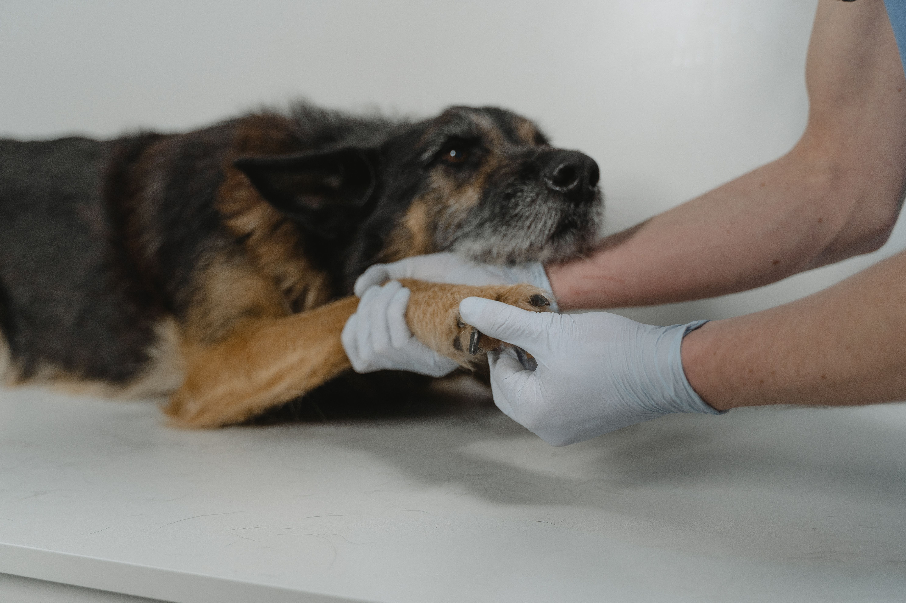

EXPERTISE CHIRURGICALE
Chirurgie spécialisée
Des interventions courantes aux situations complexes, avec une approche adaptée aux besoins de chaque patient.
ExplorerChal'Vet accueille les chiens et les chats adressés par leur vétérinaire pour une prise en charge chirurgicale spécialisée.

Expertise spécialisée en chirurgie vétérinaire
Imagerie avancée au service de la prise en charge
Collaboration étroite avec le vétérinaire référent
Nos expertises
Chaque prise en charge s’appuie sur une évaluation rigoureuse et des moyens adaptés à la situation de l’animal.
Des interventions courantes aux situations complexes, avec une approche adaptée aux besoins de chaque patient.
Explorer
Radiographie numérique et scanner contribuent à l’exploration et à la préparation de la prise en charge chirurgicale.
Explorer
Prise en charge chirurgicale des affections de la colonne vertébrale et de la moelle épinière.
ExplorerPour les vétérinaires référents
Chal'Vet apporte une expertise chirurgicale complémentaire, en lien avec le vétérinaire traitant.
Prise de contact par le vétérinaire référent.
Étude de la situation et des informations transmises.
Consultation et stratégie adaptées au patient.
Transmission au vétérinaire traitant.
Le chirurgien fondateur
Spécialiste européen en chirurgie des animaux de compagnie. Une carrière consacrée à la chirurgie, à la transmission et à l’excellence vétérinaire.
Vous accompagnez un animal adressé ?
Retrouvez les repères utiles pour comprendre le rôle de Chal'Vet et les grandes étapes de la prise en charge.